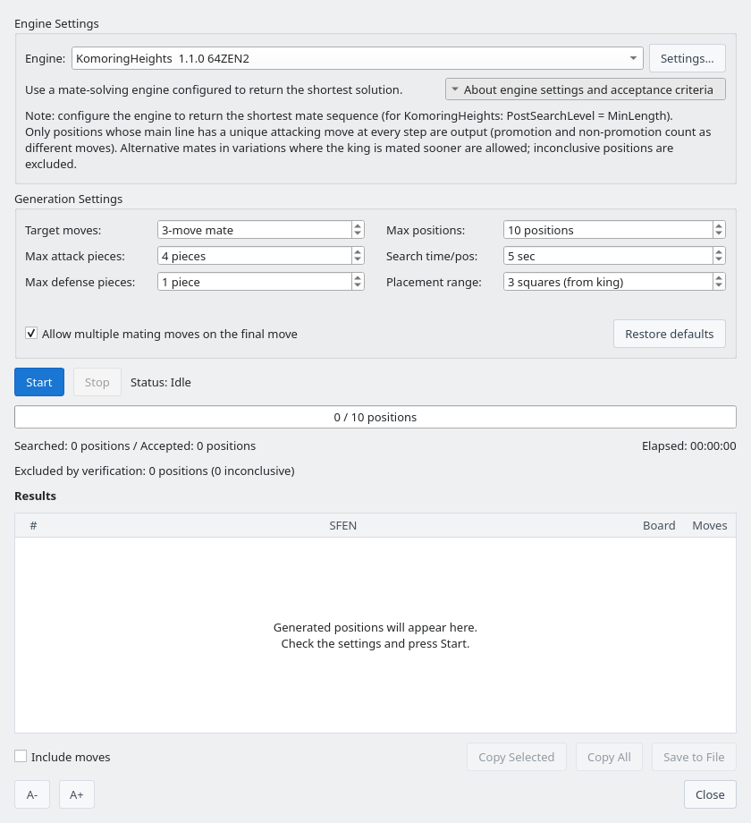
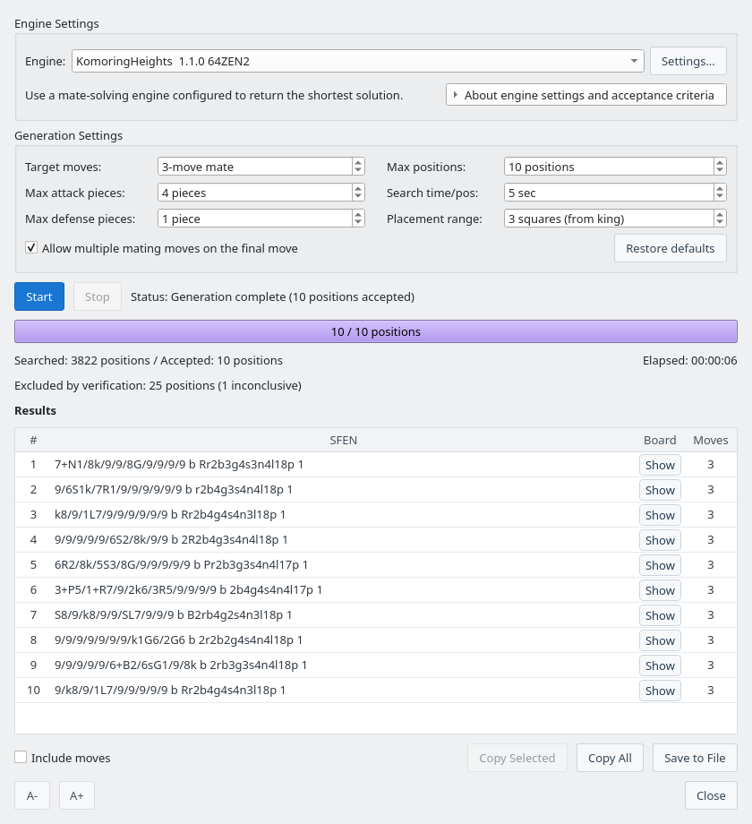
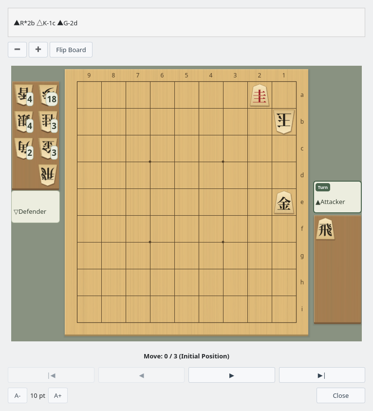

Tsume Shogi Generator
Generate tsume shogi from random positions verified by a USI engine
Screenshots were captured on Linux with the English interface.
Overview
Build random candidate positions, then check the mate and alternative mates before output
Features
The tsume shogi generator automatically performs the following steps.
- Generate random candidate tsume shogi positions.
- Screen candidates with the built-in mate search, then confirm a mate of the requested length with a USI engine (
go mate). - Check the main line for alternative mates and remove unnecessary pieces, keeping only positions that meet the conditions.
- List the results as SFEN for saving to a file or copying to the clipboard.
Mate searches can use KomoringHeights, a tsume shogi engine developed and published by komori-n. Download the engine separately, register it under Settings → Engine Settings… (Registering an Engine), and select it as the Engine in the generator dialog. Use it with settings that return the shortest solution (PostSearchLevel = MinLength for KomoringHeights, the default).
Generation Settings
Set the conditions in the generator dialog, then start generating
Tsume Position Generator Dialog
Choose Game → Tsume Position Generator… to open the dialog, check the engine and the generation settings, and click Start. The settings are used again next time.

Tsume Position Generator dialog with About engine settings and acceptance criteria expanded
| Setting | Description |
|---|---|
| Engine | The USI engine used for mate search. Settings... changes the options of the selected engine. |
| Target moves | The solution length of the puzzles (an odd number of plies). The default is a 3-move mate. |
| Max attack pieces | The maximum number of attacking pieces on the board and in hand combined. The default is 4. |
| Max defense pieces | The maximum number of defending pieces on the board, excluding the king. The default is 1. |
| Max positions | Generation ends when this many positions have been accepted. The default is 10; 0 (Unlimited) keeps generating until you stop. |
| Search time/pos | The time for the mate searches of a candidate and of each trimmed position, including the full alternative-mate check of each. The default is 5 seconds; positions whose checks do not finish in time are not accepted. |
| Placement range | The range around the king in which attacking pieces are placed, in squares. The default is 3. |
| Allow multiple mating moves on the final move | When on, positions are accepted even if the last move of the main line has several mating moves (except the first move of a 1-move mate). When off, the final move must be unique too. Alternative mates earlier in the main line, such as on the first move, are always excluded. |
| Restore defaults | Reset the generation settings to their defaults. |
Click About engine settings and acceptance criteria to show or hide notes on engine settings and the acceptance conditions.
Click Stop to stop generating. Positions accepted before stopping can still be saved and copied.
How Random Positions Are Generated
Positions are built automatically as follows.
- Place White's king on a random square of the 9×9 board.
- Place attacking pieces around the king, randomly assigning them to the board or the attacker's hand.
- Place defending pieces around the king.
- Leave out the attacker's king and add all other unused pieces to the defender's (White's) hand.
- Confirm that the king is not in check in the starting position.
Generated positions are first screened by the built-in mate search, which removes positions proven not to mate in the target length and positions with several mating first moves. Candidates the built-in search cannot decide are also sent to the USI engine, and only positions whose mate of the requested length the engine confirms proceed to the alternative-mate check. The Searched count includes positions removed by the built-in screening.
Results
Accepted puzzles are added to the results list
Results List
When a mate of the requested length is found, the position is added to the results after trimming unnecessary pieces and checking for alternative mates. The progress bar shows accepted positions against Max positions, and the lines below it show the numbers of searched and accepted positions, the elapsed time, and the positions excluded by verification (including inconclusive ones).

Generation results: ten 3-move mates accepted with the default settings
| Action | Description |
|---|---|
| Show (Board column) | Open the principal variation window to inspect the position and the mating line. Double-clicking the row or pressing Enter also opens it. |
| Include moves | When on, saved and copied SFENs are followed by moves and the mating line in USI notation. |
| Copy Selected | Copy the selected positions to the clipboard (Ctrl+C). Use Ctrl or Shift to select several. |
| Copy All | Copy all positions to the clipboard. |
| Save to File | Save the positions to a text file. The file starts with comment lines beginning with “#” that record the ShogiBoardQ version, the generation date and time, and the generation settings. The SFEN Collection Viewer and Tsume Shogi Play skip these lines when loading. |
Remove Unnecessary Pieces
Trimming automatically removes decorative pieces from the random positions: pieces that do not affect the mating solution.
- Try removing the attacking and defending pieces on the board and the pieces in the attacker's hand, one at a time.
- Keep a removal if the position still mates in the target length with a unique main line.
- Move removed pieces to the defender's hand to keep all 40 pieces.
- Check again after each removal to find pieces that have become unnecessary.
- Do not output a puzzle if a check after a removal times out or is inconclusive, or if trimming is interrupted by stopping or an error.
This check establishes that no single piece can be removed while keeping a puzzle with the same conditions. It does not guarantee the minimum number of pieces when several pieces are removed at once or the placement itself changes.
Inspect the Mating Line
Replay a generated puzzle on a board
Principal Variation Window
Click Show in the results list to open the principal variation window. It shows the mating line at the top and the position below, with the Attacker and the Defender as players. Click ▶ to advance one move, or ▶| to go to the mating position. See the principal variation board in Mate Search for details.

Principal variation window: the starting position of a generated 3-move mate (Move 0 / 3)
Generate Tsume Shogi with the CLI
Set up generate-tsume, run parallel Python workers, save solutions, and reverify results
Prepare the CLI and a mate-search engine
generate-tsume uses the same generation pipeline as the GUI. It outputs JSON Lines after checking mate length, main-line uniqueness, and unnecessary pieces. Python can launch the CLI directly as a child process; no MCP server is needed.
The examples below use a Linux shell and Python 3. Run them from the repository root. See Building on Linux for prerequisites. On other platforms, adjust the CLI executable name and path for your environment.
Build the CLI and list registered engines
cmake -B build -S . -DCMAKE_BUILD_TYPE=Release
cmake --build build --target shogiboardq-cli --parallel 4
./build/shogiboardq-cli list-enginesFirst register an engine that supports go mate. Pass the exact registered name returned by list-engines to --engine, not an executable path. Replace the example name below with your actual name, including spaces.
For KomoringHeights, a starting configuration for parallel generation is Threads=1, USI_Hash=256, PostSearchLevel=MinLength, and GenerateAllLegalMoves=true. Configure these through Engine Settings and check which options your engine supports.
Generate one batch and inspect the JSON Lines output
Start with up to ten 3-ply puzzles to check your engine configuration and output. The JSON Lines event log is a different format from the puzzle collection text file.
Generate up to ten 3-ply puzzles
./build/shogiboardq-cli generate-tsume \
--engine 'KomoringHeights 1.1.0 64ZEN2' \
--target-moves 3 --max-positions 10 \
--timeout-ms 5000 --max-attack 4 --max-defend 1 \
--attack-range 3 --stdin-control > tsume-batch.jsonl| Option | Meaning and range |
|---|---|
--target-moves | Mate length: an odd number from 1 to 19; default 3 |
--max-positions | Limit per process: 1–100 positions; default 10 |
--timeout-ms | Time budget for candidate searches, trimming, and verification: 500–60000 ms; default 5000 |
--max-attack | Maximum attacking pieces on board and in hand combined: 1–10; default 4 |
--max-defend | Maximum defending pieces on the board, excluding the king: 0–10; default 1 |
--attack-range | Attacking-piece placement range around the king: 1–8 squares; default 3 |
--stdin-control | Stop on a line containing stop or on end-of-file on stdin |
--no-final-alternatives | Require a unique final mating move; final-move alternatives are allowed by default |
--no-remaining-to-hand | Do not give unused pieces to the defender; omit this for standard tsume shogi |
started reports settings, progress reports generated, found, rejected, and inconclusive counts, position supplies an accepted puzzle, and finished marks completion. Read the SFEN and solution from position.sfen and position.pv, an array of USI moves. Also check error events and the process exit code.
Key fields of a position event
{"event":"position","sfen":"9/8k/7P1/9/7R1/9/9/9/9 b r2b4g4s4n4l17p 1","pv":["2c2b+","1b1c","2e2c+"]}With --stdin-control, type stop and press Enter to stop. Closing stdin also stops generation, so Python must keep stdin=PIPE open until it sends a stop request. An environment that starts the process with closed stdin may cause it to stop immediately.
Run parallel workers from Python and save progress
Save the code below as generate_tsume_parallel.py and run python3 generate_tsume_parallel.py from the repository root. It only uses the Python standard library. Start with TARGET=10 and WORKERS=1, then increase concurrency if CPU and memory capacity allow.
PLIES is the mate length, TARGET is the combined collection target, and WORKERS is the number of concurrent processes. Adjust TIMEOUT_MS, piece limits, and placement range at the top. Targets above 100 use successive batches of at most 100 positions each.
Show Python code: collect 100 three-ply puzzles with four workers
generate_tsume_parallel.py
import asyncio
import json
import os
from pathlib import Path
CLI = str(Path("build/shogiboardq-cli").resolve())
ENGINE = "KomoringHeights 1.1.0 64ZEN2" # Use the exact name from list-engines
PLIES = 3
TARGET = 100
WORKERS = 4
TIMEOUT_MS = 5000
MAX_ATTACK = 4
MAX_DEFEND = 1
ATTACK_RANGE = 3
ALLOW_FINAL_ALTERNATIVES = True
OUTPUT = Path(f"tsume-work/tsume_{PLIES}ply_candidates.txt")
ENV = dict(os.environ)
# Optional: use a separately prepared configuration on Linux
# ENV["XDG_CONFIG_HOME"] = "/path/to/tsume-config"
positions = {}
active = set()
def remember(sfen, pv):
fields = sfen.split()
if len(fields) != 4 or len(pv) != PLIES:
raise ValueError("Invalid SFEN or PV length")
key = " ".join(fields[:3]) # Board, turn, and hands; ignore the move number
if key not in positions and len(positions) < TARGET:
positions[key] = sfen + " moves " + " ".join(pv)
def checkpoint():
temporary = OUTPUT.with_suffix(".tmp")
text = "# CLI candidates (before independent collection validation)\n"
text += "\n".join(positions.values()) + "\n"
temporary.write_text(text, encoding="utf-8")
temporary.replace(OUTPUT)
async def stop(process):
if process.returncode is None:
try:
process.stdin.write(b"stop\n")
await process.stdin.drain()
except (BrokenPipeError, ConnectionResetError):
pass
async def close_process(process):
await stop(process)
try:
await asyncio.wait_for(process.wait(), timeout=15)
except asyncio.TimeoutError:
process.kill()
await process.wait()
active.discard(process)
async def worker(number):
while len(positions) < TARGET:
args = [
CLI, "generate-tsume", "--engine", ENGINE,
"--target-moves", str(PLIES),
"--max-positions", str(min(100, TARGET - len(positions))),
"--timeout-ms", str(TIMEOUT_MS),
"--max-attack", str(MAX_ATTACK), "--max-defend", str(MAX_DEFEND),
"--attack-range", str(ATTACK_RANGE), "--stdin-control",
]
if not ALLOW_FINAL_ALTERNATIVES:
args.append("--no-final-alternatives")
log_path = OUTPUT.parent / f"worker-{PLIES}ply-{number}.jsonl"
err_path = OUTPUT.parent / f"worker-{PLIES}ply-{number}.stderr.log"
with log_path.open("a", encoding="utf-8") as log, err_path.open("ab") as err:
process = await asyncio.create_subprocess_exec(
*args, env=ENV,
stdin=asyncio.subprocess.PIPE,
stdout=asyncio.subprocess.PIPE, stderr=err,
)
active.add(process)
try:
# Another worker may have reached the target during startup.
if len(positions) >= TARGET:
await stop(process)
async for raw in process.stdout:
line = raw.decode("utf-8")
log.write(line)
log.flush()
event = json.loads(line)
if event["event"] == "error":
raise RuntimeError(event["message"])
if event["event"] != "position":
continue
remember(event["sfen"], event["pv"])
checkpoint()
print(f"{len(positions)}/{TARGET}", flush=True)
if len(positions) == TARGET:
await asyncio.gather(*(stop(p) for p in list(active)))
if await process.wait() != 0:
raise RuntimeError(f"CLI failed; see {err_path}")
finally:
await close_process(process)
async def main():
if TARGET < 1 or WORKERS < 1:
raise ValueError("TARGET and WORKERS must be positive")
OUTPUT.parent.mkdir(parents=True, exist_ok=True)
if OUTPUT.exists():
for line in OUTPUT.read_text(encoding="utf-8").splitlines():
if line and not line.startswith("#"):
sfen, moves = line.split(" moves ", 1)
remember(sfen, moves.split())
tasks = [asyncio.create_task(worker(i)) for i in range(WORKERS)]
try:
await asyncio.gather(*tasks)
finally:
for task in tasks:
task.cancel()
await asyncio.gather(*tasks, return_exceptions=True)
await asyncio.gather(*(close_process(p) for p in list(active)))
checkpoint()
print(f"Collected: {OUTPUT} (validate the collection separately)")
if __name__ == "__main__":
asyncio.run(main())All workers share a dictionary keyed by the SFEN board, turn, and hands. Results are saved through temporary-file replacement after each discovery and reloaded on restart. JSON Lines and stderr logs are kept separately for each mate length and worker. Once the target is reached, all CLI processes receive a stop request. After Ctrl+C, restart to resume from saved results.
This code collects positions and removes duplicate SFENs. It does not exclude similar puzzles with the same solution but different piece types, or mirrored positions. Independent validation of the whole collection is a separate step.
Notes on running, stopping, and resuming
- Total runtime:
--timeout-msis not a deadline for the entire command. Long mates or strict settings may yield few positions, so time to reach the target is not guaranteed. Start with a small target, inspect progress, and stop to adjust settings if needed. Inconclusive results are neither proof of no mate nor successful verification. - CPU and memory: Both the worker count and the engine thread count affect resource use. Sixteen processes with 256 MiB each require about 4 GiB for hash tables alone, plus other memory.
- Configuration: If CLI engines differ from those in the GUI, check that you are using the same user and settings. On Linux, when changing
XDG_CONFIG_HOME, prepare engine registrations and options inShogiBoardQ/ShogiBoardQ.iniunder that directory. Use the same environment forlist-enginesand Python. - Resuming: Do not let multiple Python collectors write to the same
OUTPUT. The example does not reverify existing lines. If mate length, engine, or alternative-mate policy changes, use a new output file or reverify existing entries. Settings are also recorded in thestartedevent logs. - Alternative mates: By default, multiple final mating moves and alternative solutions in shorter side lines are allowed. To require a unique final move, set
ALLOW_FINAL_ALTERNATIVES=Falseand also pass--no-final-alternativeswhen reverifying. - Output files:
tsume-batch.jsonlis an event log. Python writes collected SFENs and solutions totsume-work/tsume_3ply_candidates.txt. If a CLI process fails, inspect its JSON Lines and stderr logs.
Save solution text and validate the collection
Use UTF-8 and one puzzle per line in the form SFEN moves USI-moves…. Comments beginning with # can record the date, engine, mate length, piece limits, time budgets, and alternative-mate policy.
A three-ply puzzle, saved as one line
9/8k/7P1/9/7R1/9/9/9/9 b r2b4g4s4n4l17p 1 moves 2c2b+ 1b1c 2e2c+Use verify-tsume to recheck main-line uniqueness. This example checks one position; for a collection, pass each SFEN in turn.
Recheck main-line uniqueness
./build/shogiboardq-cli verify-tsume \
--engine 'KomoringHeights 1.1.0 64ZEN2' \
--target-moves 3 --timeout-ms 15000 \
--sfen '9/8k/7P1/9/7R1/9/9/9/9 b r2b4g4s4n4l17p 1'The JSON field ok reports command success. Also require status to be unique before accepting the result, and defer or retry unknown results. This command checks main-line uniqueness; it does not replace auditing every saved PV move and the necessity of each piece.
For independent collection validation, the tools included in the source check shortest mate length, legal solutions, main-line uniqueness, and every single-piece removal. Their --engine argument takes an engine executable path, unlike the CLI registered name.
Independently audit the collected file
cmake -B build -S . -DBUILD_TESTING=ON
cmake --build build --target tsumeshogi_collection_auditor --parallel 4
python3 scripts/audit_tsume_collections.py tsume-work/tsume_3ply_candidates.txt \
--engine /path/to/KomoringHeights-by-gcc \
--output-dir tsume-work/audit-3ply --workers 4 --timeout-ms 30000Inspect statuses, unique_minimal, and changed in summary.json. Do not count unknown entries as complete; retry with a larger budget or exclude them. Verified results are saved in tsume_3ply_minimal.txt. If trimming or duplicate/similarity filtering reduces the count, replenish and audit again. See the collection README (Japanese) for detailed validation conditions.
The piece audit establishes that no single-piece removal preserves the acceptance conditions. It does not guarantee the minimum piece count under simultaneous removals or changes of piece type.
Build a Varied Puzzle Collection
Check solution similarity and puzzle order as well as position validity
Check solution similarity as well as duplicate positions
Different SFENs can still produce similar solving experiences through the same king chase, reflection, translation, or substitutions such as gold and promoted knight. Removing duplicate positions with the standard CLI and Python example does not guarantee variety in a collection.
Filter and replenish with collection-editing tools
scripts/refill_diverse_tsume.py takes verified collections, shares a similarity index across workers, and generates replacements for missing entries. It uses dedicated samplers and auditors separately from the standard CLI. After replenishment, run an independent audit with scripts/audit_tsume_collections.py. Once all results are conclusive, scripts/publish_diverse_tsume.py orders puzzles to reduce overlap with the preceding ten solutions.
Similarity filtering is an editorial rule based on the main line, not a complete assessment of a puzzle’s value including variations and misleading alternatives. See the collection README (Japanese) for input requirements, resuming, exclusions, and publication.